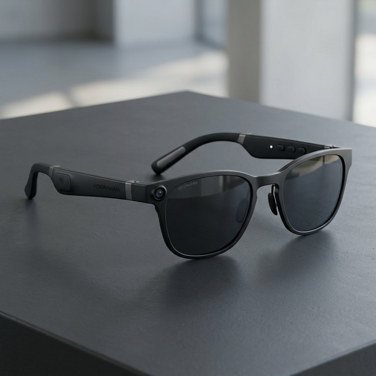
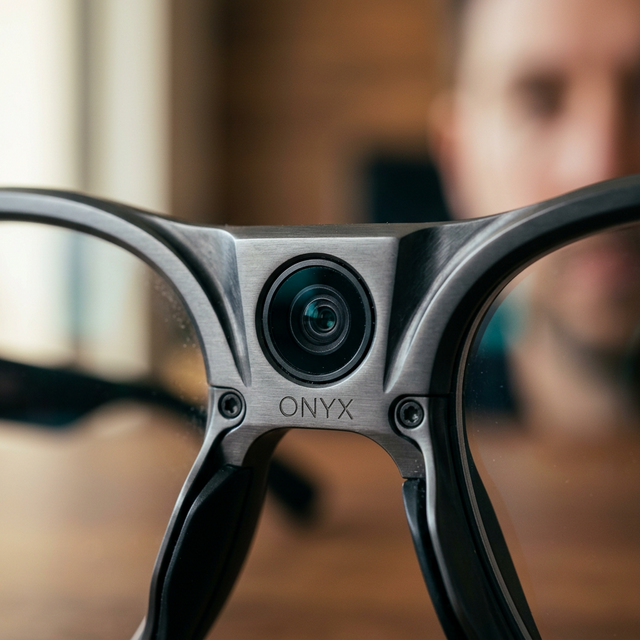
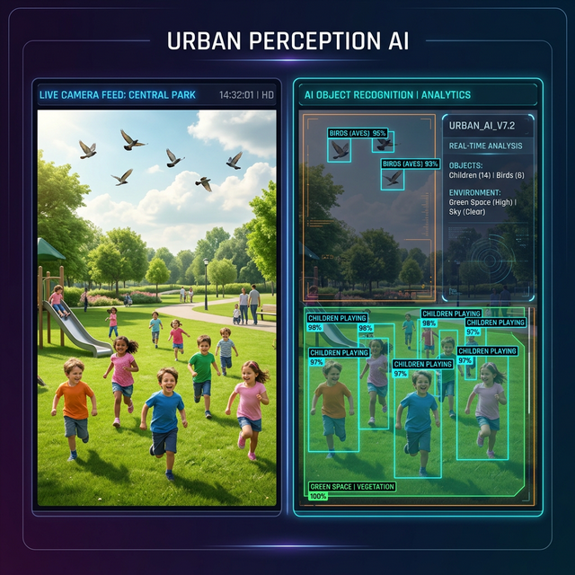
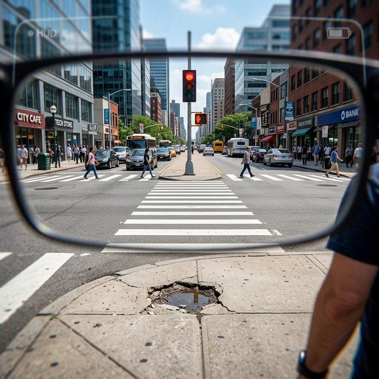

ViviAid Lite is a zero-latency ecosystem that replaces missing physical infrastructure with proactive AI guidance—empowering independence through a single, seamless wearable.

Experience real-time AI perception. Click any capability to explore dynamic command interactions.
Voice-guided precision using spatial mapping.
Real-time visual data relayed to your earpods.
Seamless streaming and audio control.
Voice-activated rideshare integration.
Social identity awareness and real-time mood detection.
Instant text extraction from visual field.
Fraud detection and bill recognition.
A perfect harmony of sight and sound. The Obsidian Glasses actively observe the world and relay real-time intelligence through integrated open-ear directional speakers.
Aerospace aluminum with 4K AI capture sensors.
Open-ear speakers integrated into the frame arms for total safety.
Direct wired tethering for instantaneous hazard detection.

Experience the intelligent synchronization of camera capture and AI auditory response.

Buddy actively monitors your surroundings to keep you safe. No commands required—it tells you exactly what you need to know, exactly when you need it.
